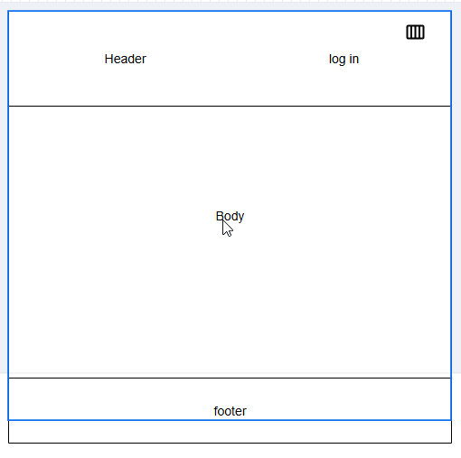
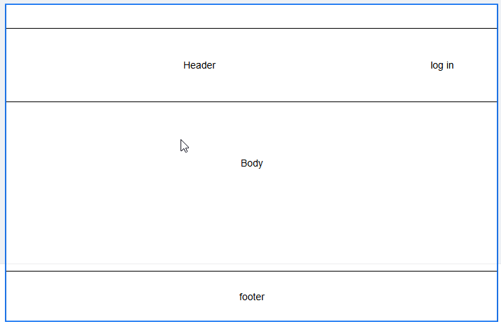

Name: Remote Job Connect
Reason: This name was chosen because it clearly represents the goal of the site, which is to connect job seekers and employers in the remote job market. It is concise, memorable, and aligns with the purpose of the website.
The purpose of Remote Job Connect is to provide a user-friendly platform for job seekers to find remote job opportunities and for employers to post job listings. It will also provide valuable resources, such as tips for remote work success and career development advice.
A simple representation of the mobile layout, prioritizing navigation and key information.
A larger representation for desktop users, utilizing a grid layout for efficient content distribution.
